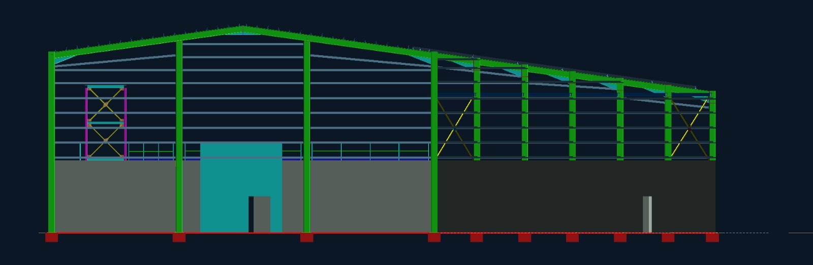
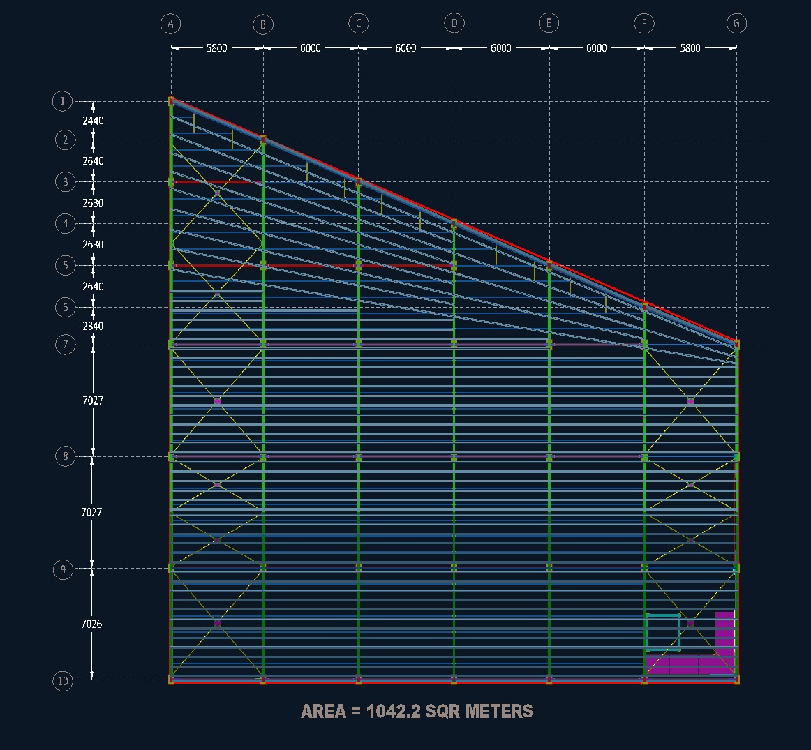
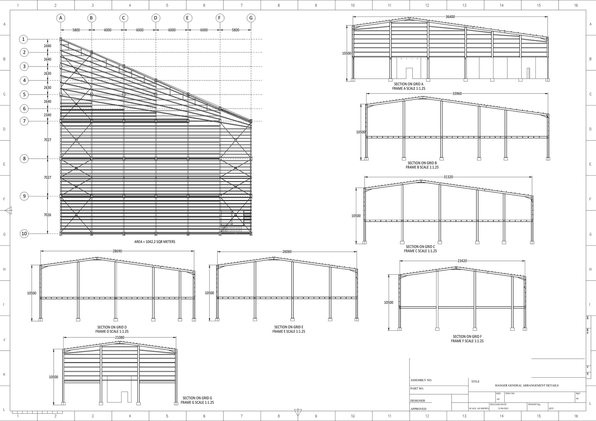
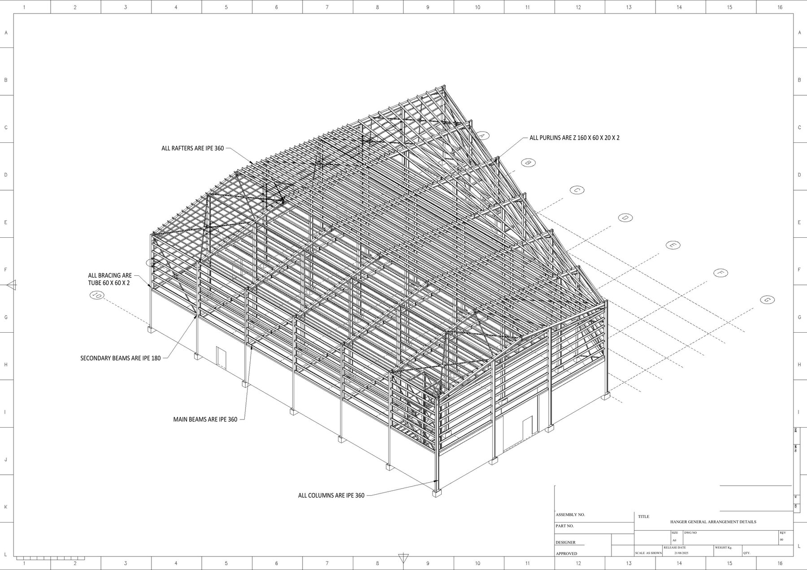
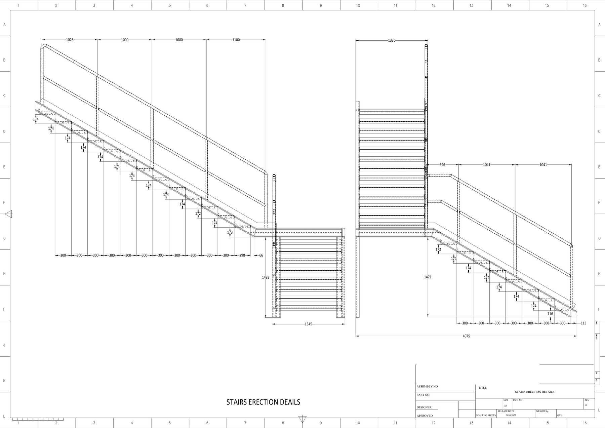
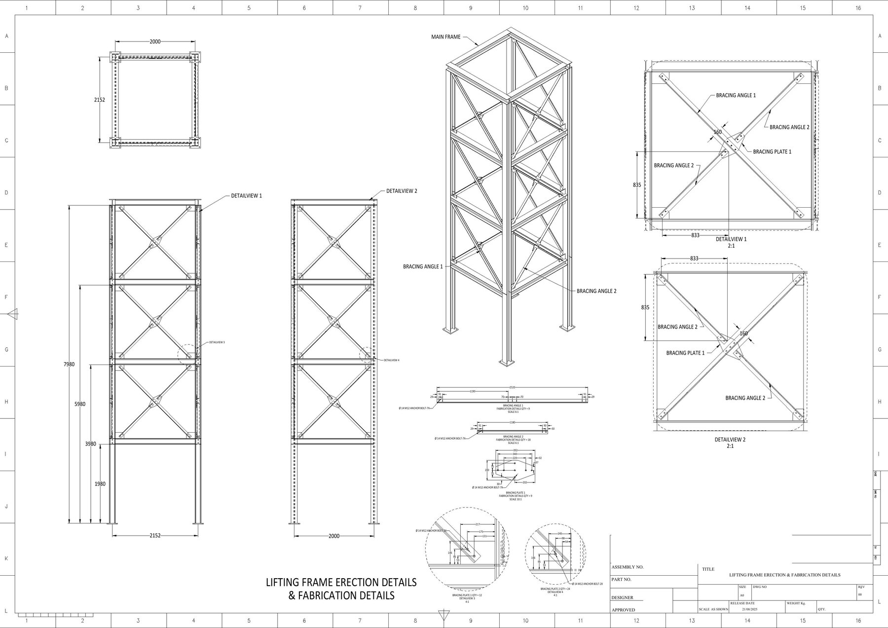

Modeling and Fabrication Drawings of a 1,042 m² Industrial Hangar
Development of a coordinated three-dimensional structural model and a comprehensive erection and fabrication drawing package for an industrial steel hangar.

Project overview
This project involved the detailed modeling and fabrication documentation of an industrial steel hangar with an area of approximately 1,042 m². The coordinated model brings together the primary portal frames, secondary beams, roof and wall purlins, bracing systems, access stair, handrails, and associated connection details into a consistent structural assembly.
Modeling and documentation scope
- Develop the complete three-dimensional steel structure using the established building grids and elevations.
- Coordinate the primary frames, longitudinal members, purlins, bracing, stair, handrails, and local access elements.
- Prepare general-arrangement and isometric erection drawings for the overall hangar.
- Produce sequential frame-by-frame erection details for the primary and secondary steelwork.
- Develop member fabrication drawings with dimensions, plates, stiffeners, holes, and connection geometry.
- Prepare dedicated fabrication details for the stair, handrails, columns, rafters, beams, bracing, and purlins.
- Compile the coordinated deliverables into a complete 38-sheet A0 erection and fabrication package.
Drawing package
The drawing set details the progression from general arrangement and frame erection sequencing through to member-level fabrication. Key arrangement and fabrication sheets are highlighted below, with the complete 38-sheet drawing set available for download.
Engineering outcome
The final package provides a coordinated link between the three-dimensional structural model, site erection requirements, and workshop fabrication information. Organizing the documentation by frame and component type makes the large steelwork package easier to review, fabricate, and assemble while maintaining consistency across the complete hangar.
Project gallery





